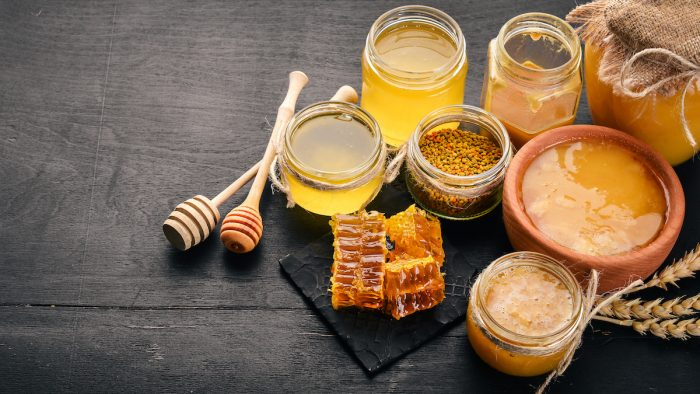
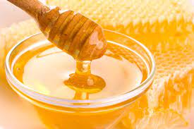
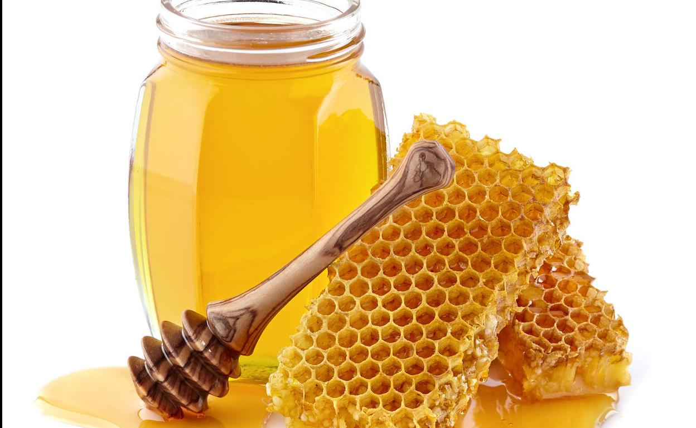

TIPOS DE MIEL:
Estudio del Dr. Patricio Vásquez de la Universidad Autónoma de Chile analizó fisicoquímicamente muestras de miel chilenas -acidez, azúcar, conductividad y otras variantes- confirmando su autenticidad y calidad. A partir del análisis realizado se puede certificar los productos, beneficiando a pequeños y medianos productores para que puedan posicionar sus mieles en mercados internacionales.
La miel es posible clasificarla de acuerdo con diferentes criterios, como la naturaleza de la fuente de azúcares que da su origen o las especies de flores de las cuales proceden el néctar y polen.

Según la fuente de azúcares utilizadas por las abejas melíferas para producirla podemos encontrarnos con miel de néctar, como su nombre lo indica fabricada a partir de néctar de flores, o miel de mielada.
Ésta última es fabricada a partir de la exudación de hojas en algunas especies vegetales y/o excreción que dejan insectos succionadores, tales como cochinillas y pulgones sobre las plantas.
En tanto, según la flora utilizada por las abejas para obtener néctar y polen, los productos finales pueden clasificarse en monofloral, bifloral o multifloral.
La miel monofloral es aquella en la que al menos el 45% del total de sus granos de polen corresponden a una misma especie vegetal, denominándose según la especie dominante en su fracción polínica.

En Chile, las más consumidas son la miel de ulmo y quillay, aunque existen otras cosechadas en el país, como la de avellano, cerezo, azahar (naranjo), corontillo, eucaliptus, limón, maqui, raps, siete camisas, tepu, tevo, tineo, tiaca y más.
Cuando en la composición se encuentran presentes significativamente polen de dos especies de plantas, alcanzando en su conjunto un valor mínimo de 50%, y en que ambas especies presenten un porcentaje que no difiere del 5% entre ellas se habla de mieles biflorales.
En cambio, si hay tres o más y ninguna con algún porcentaje mayor o igual a 45% estamos frente a una miel multifloral.
«Sorprendentemente, según la literatura científica la mayoría de las mieles multiflorales chilenas provienen de especies vegetales endémicas y nativas (arbustos, árboles y hierbas)» comenta el investigador de la Universidad Autónoma de Chile.
En países como Alemania, Austria, Eslovenia, Grecia, Suiza, y Turquía, la miel de mielada tiene alta demanda y alcanza un precio superior en comparación a la miel multifloral.

«Lo anterior, se explica porque el consumidor valora este producto que es relativamente escaso, y que poseería mayores propiedades antioxidantes que la miel de néctar» analiza.
Y agrega «por ello, el cliente está dispuesto a pagar un precio más alto por el producto final. En general, las mieles monoflorales tienen valor agregado respecto a las mieles multiflorales en Chile».
Para conocer la composición de 12 muestras de miel de La Pintana, Linderos, Cajón del Maipo, Pichidegua y Chiloé, el Dr. Patricio Vásquez utilizó tres tipos de análisis: melisopalinológico, técnicas de análisis fisicoquímico convencional y resonancia magnética nuclear (1H-NMR).
El análisis melisopalinológico permite conocer qué tipos de polenes están presentes en una muestra de miel, y su abundancia absoluta y relativa según especie vegetal.
En tanto, el análisis fisicoquímico convencional permite conocer parámetros sobre autenticidad y calidad de miel.

Por su parte, la resonancia magnética nuclear (1H-NMR) es un análisis más sofisticado que permite determinar la composición química, identificando perfiles de moléculas y sus concentraciones. Mediante esta técnica es posible determinar y cuantificar concentraciones de azúcares, aminoácidos, ácidos orgánicos y moléculas de bajo peso molecular contenidas en la miel.
«Los datos generados, analizados en conjunto, nos entregarán información sobre si la miel es natural, a qué tipo corresponde, origen botánico y características de las etapas de producción (cosecha, envasado, almacenamiento)» señala el investigador.
Esta información puede mejorar el proceso de etiquetado, definiendo exactamente los componentes de la miel y definir explícitamente de qué tipo es.
«En términos prácticos estos análisis permiten al apicultor(a) distinguir, guiado por la experiencia y labor del científico(a) y/o químico analítico, el origen botánico de sus mieles: De qué especies vegetales proviene el néctar y/o polen a partir del cual fue elaborada; de qué tipo es, si es de néctar o mielada; la calidad respecto al proceso productivo, en cuanto a la cosecha, envasado, almacenamiento y otros indicadores» comenta el Dr. Patricio Vásquez.
Existen parámetros que nos hablan de la flora circundante a la colmena y de los principios bioactivos presentes en ellas, por ejemplo, compuestos antioxidantes.
Otros indicadores fisicoquímicos entregan información relevante respecto a las condiciones climáticas del lugar donde se encuentra el apiario, características del proceso de alimentación de las abejas melíferas, perfil de azúcares colectados, entre otros.
«El conjunto de datos fisicoquímicos analizados nos entregará información respecto a la autenticidad y calidad de la miel cosechada, podemos decir si es miel natural o adulterada» señala el Dr. Patricio Vásquez.
Actualmente el investigador se encuentra realizando un estudio sobre mieles monoflorales ya que existen pocos análisis de las características particulares desde el punto de vista fisicoquímico, antimicrobiano, antioxidante, entre otros.
Este estudio es parte del proyecto de posdoctorado FONDECYT Nº 3180300 (Agencia Nacional de Investigación y Desarrollo de Chile, ANID).